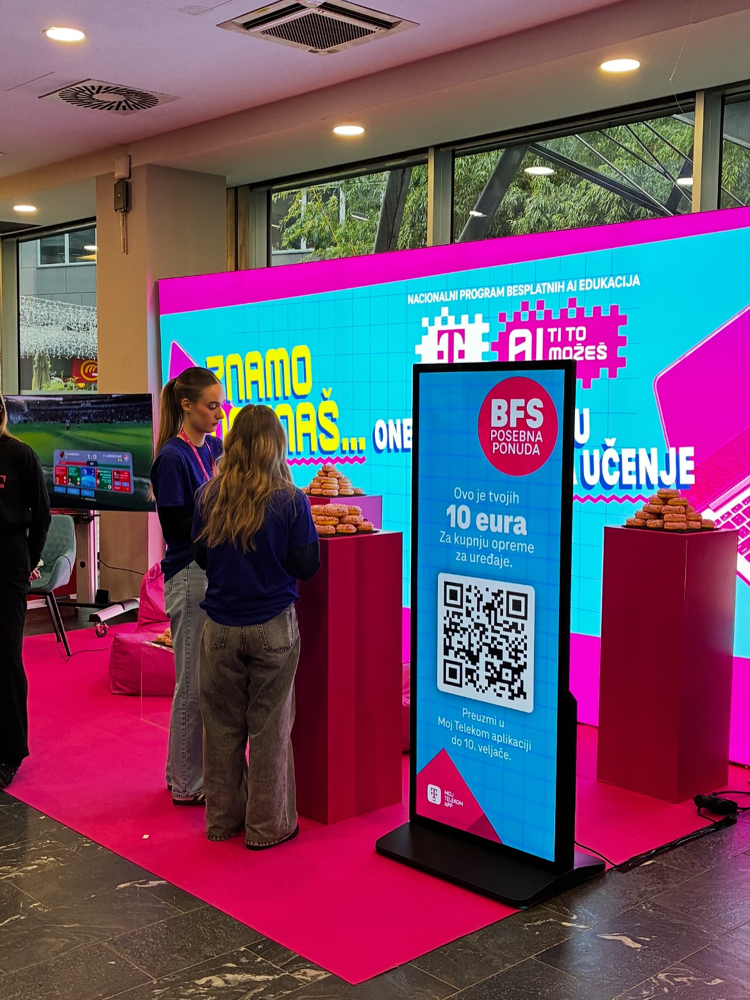
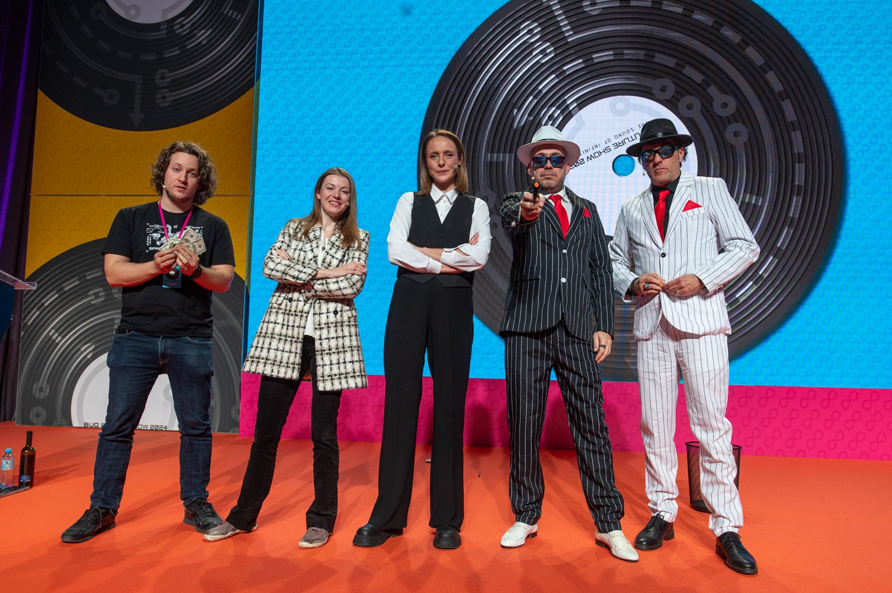
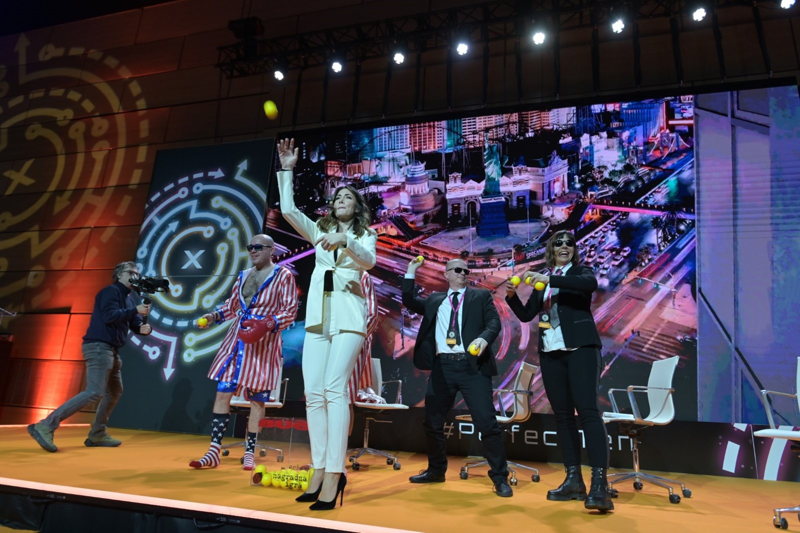
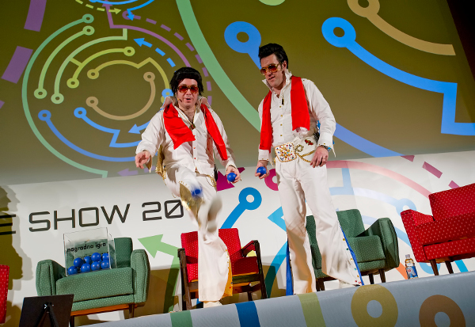

Ljudi odmah razumiju izazov
Nema dugog objašnjavanja ni kompliciranih pravila. Sudionik u par sekundi zna što treba napraviti.
Za evente, konferencije i team building
Ljudi odmah razumiju izazov, žele pokušati, a publika voli gledati. Zato TwistedBike ne zauzima samo prostor nego stvara atmosferu.
Dobra event aktivacija mora biti jasna, brza za uključivanje i zanimljiva i sudioniku i publici. Upravo tu TwistedBike ima prednost.
Nema dugog objašnjavanja ni kompliciranih pravila. Sudionik u par sekundi zna što treba napraviti.
Pokušaji su zabavni za gledati, pa se oko atrakcije prirodno skuplja publika i raste energija u zoni.
Malo prostora, brz setup i jasan format čine aktivaciju zahvalnom i za organizatora i za lokaciju.
Može raditi kao spontani fun corner ili kao planirani dio programa.
Brza i vizualno atraktivna aktivacija koja lako privlači prolaznike i zadržava pažnju.




Jasan i profesionalan format koji se lako uklapa u različite tipove evenata.
Najčešći scenariji u kojima TwistedBike ima najviše smisla.
Kada želiš da prostor ne “padne” između glavnih dijelova programa.
Kada želiš nešto što privlači pogled i potiče zadržavanje ljudi u zoni.
Kada želiš lagan, pristupačan izazov koji opušta atmosferu i pokreće interakciju.
Najčešća pitanja organizatora, agencija i firmi.
Preporučena postava je oko 2 × 4 m ravne i stabilne površine. Ako je prostor manji, format se može prilagoditi.
Da. TwistedBike je prikladan za unutarnje i vanjske prostore, ovisno o uvjetima lokacije i kvaliteti podloge.
Za osnovnu postavu nije nužna.
Operater daje kratke upute, nadzire korištenje i može zaustaviti pokušaj ako procijeni da uvjeti nisu sigurni.
Da. Može raditi kao drop-in aktivacija u pauzama ili kao strukturirani dio team building programa.
Da, ovisno o dogovorenom formatu i vizualima.
Pošaljite osnovne informacije o eventu i javimo se s prijedlogom formata.